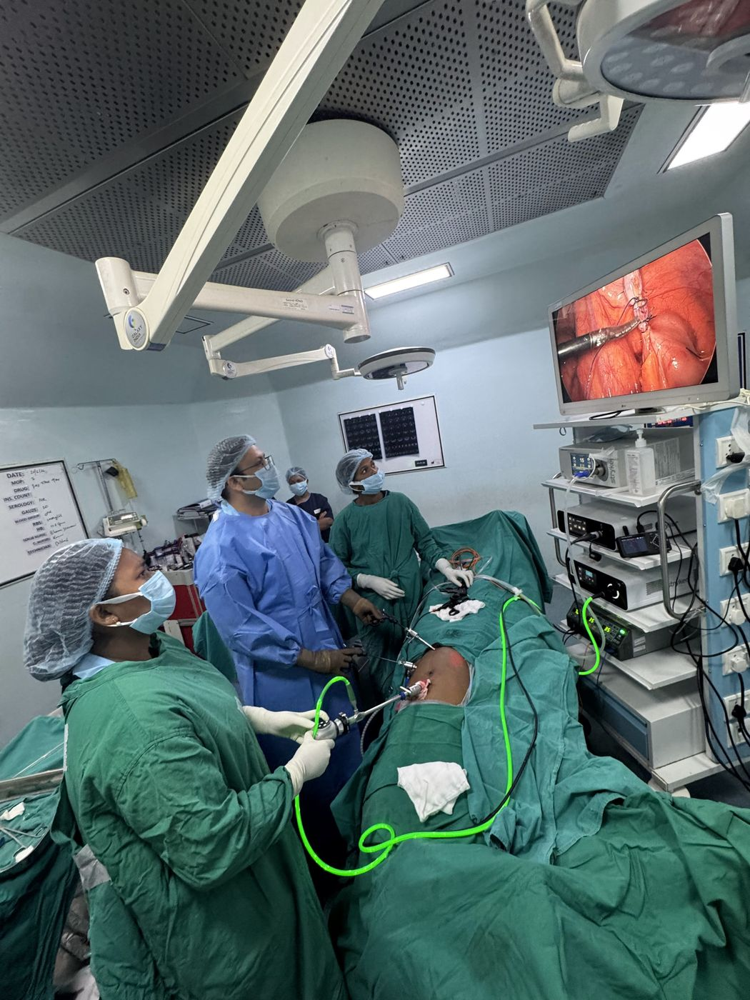

Laparoscopic appendicectomy
Keyhole removal of the appendix through small cuts in the abdomen.
Understand your options · Plan your visit
Learn about appendicitis and laparoscopic appendicectomy in Ranchi. Consult Dr. Vikeerna Bharti for assessment or follow-up; severe pain needs urgent hospital care.
The visit links below are for non-urgent follow-up or planned discussion after assessment. Do not delay urgent care.
अपेंडिक्स (अपेंडिसाइटिस) में दर्द अक्सर नाभि के पास से शुरू होकर पेट के निचले दाएँ हिस्से में आता है, साथ में बुखार या उल्टी हो सकती है। ऐसा दर्द हो तो तुरंत नज़दीकी अस्पताल जाएँ।
Understanding the condition
The appendix is a small pouch attached to the large bowel in the lower right abdomen. Appendicitis means it is inflamed, usually suddenly. Without timely treatment it can burst and cause a serious infection in the abdomen.
These symptoms need same-day hospital assessment. Do not wait for an OPD appointment or a WhatsApp reply.
Treatment
Dr. Bharti usually removes the inflamed appendix by laparoscopic appendicectomy through three small cuts. The operation commonly takes 30–45 minutes. An open operation is used when the findings make it safer.
Emergencies
Appendicitis can happen at any hour. Dr. Bharti attends emergency surgery, including appendix operations at night, at Samford Super Speciality Hospital, Kokar Chowk, Ranchi. Go directly to hospital for urgent assessment; do not wait for a WhatsApp reply.
If you have severe pain in the lower right abdomen with fever, a sudden worsening of pain or a hard, very tender abdomen, go to the hospital emergency immediately. Do not take painkillers and wait.
The first consultation
Appendicitis is inflammation of the appendix. Pain may move towards the lower right abdomen, but symptoms vary. Examination, blood tests and imaging may be needed.
Bring available reports and scans, previous prescriptions, and any operation or discharge records. There is no need to upload medical reports to request a visit.
Bring a list of medicines and allergies, and the questions you would like answered.
Medical names, explained simply
Keyhole removal of the appendix through small cuts in the abdomen.
Removal through a larger incision when the findings or safety of the operation call for it.
An appendicular abscess is a collection of pus. Perforation means a hole has developed. Dr. Bharti’s experience includes operative management of these complex abdominal emergencies.
The procedure is chosen after assessment. A technique listed here is not suitable for every patient.
An individual treatment plan
Treatment often involves removing the appendix. In selected circumstances, antibiotics may be discussed.
A burst appendix or collection of pus changes the treatment plan and may need antibiotics, drainage or surgery.
Inflamed tissues can form a mass. Immediate surgery is not the only possible plan; the findings guide treatment and follow-up.
These are general options, not a recommendation for an individual patient. Your examination and reports guide the advice.
Already advised surgery?
Bring your reports and the recommendation you received. Understand your diagnosis, the options that may suit you and the questions to ask before deciding.
Planning ahead
Recovery depends on whether the appendix has burst and whether there is infection. Follow discharge instructions about wound care, activity and returning to work.
Informed decisions
Discuss bleeding, infection, an abdominal collection and injury to nearby structures. Some patients need further treatment or an open operation.
Already advised a procedure? Plan a second opinion →Ask for a clear estimate
An estimate depends on the diagnosis, proposed operation and hospital care required. Bring existing reports so that the options and likely costs can be discussed.
Ask what is included and excluded, and how unplanned treatment would be charged.
Insurance and Ayushman Bharat: at Samford Super Speciality Hospital, where Dr. Bharti operates, cashless treatment is available under major health-insurance and TPA plans, Ayushman Bharat and the Jharkhand Rajya Karmi Swasthya Bima Yojana (state employees’ health insurance). Eligibility depends on your policy or card and is confirmed by the hospital insurance desk.
Your surgeon

Your questions
Write down anything you are unsure about and bring it to your consultation.
Pain that starts near the navel and moves to the lower right abdomen within a day, with fever, nausea or vomiting, is typical of appendicitis. It is a surgical emergency: go to a hospital emergency the same day. Samford Super Speciality Hospital, Kokar Chowk, Ranchi, has 24/7 emergency surgery.
Appendicitis needs urgent hospital assessment. Surgery is the standard treatment; antibiotics alone may be considered in selected cases after examination and tests. Do not try to make this decision at home or wait for an OPD appointment.
A burst appendix can spread infection through the abdomen (peritonitis). This makes surgery more complex and recovery longer, which is why early assessment matters.
Yes. Dr. Bharti attends emergency surgery, including appendix operations at night, at Samford Super Speciality Hospital, Kokar Chowk, Ranchi, which has anaesthesia and ICU support. Go directly to hospital for urgent assessment; do not wait for a WhatsApp reply.
After laparoscopic appendicectomy, most patients go home in 24–48 hours, return to light activities in 5–7 days and to full activity in two to three weeks. Recovery is longer if the appendix had burst.
The cost depends on the hospital room category, anaesthesia and theatre charges, investigations, the complexity of your case and any insurance or scheme approval. A clear estimate is given after examination and review of your reports. Cashless treatment is available at Samford under major health-insurance and TPA plans, Ayushman Bharat and the Jharkhand Rajya Karmi Swasthya Bima Yojana; the hospital insurance desk confirms eligibility.
Suspected appendicitis should be assessed by a general surgeon the same day, not managed with painkillers at home. Dr. Vikeerna Bharti attends emergency appendix cases at Samford Super Speciality Hospital, Kokar Chowk. Call 62060 91982.
Often first around the navel, then in the lower right abdomen. Pain can be in a different place in children, older people and pregnant women, so seek hospital assessment for severe or worsening abdominal pain.
For a follow-up after treatment, for an appendix lump being watched, or to discuss a planned operation advised elsewhere. Urgent symptoms need hospital care first.
Take the next step
Choose your clinic and prepare an appointment request. Review the message and press Send in WhatsApp.
You can visit during the listed OPD hours. For Garhwa, please check the visiting date before travelling.
Further reading
Content updated 10 October 2026. General patient information; an examination is needed for personalised advice.
दाहिनी ओर पेट के निचले हिस्से में तेज दर्द, बुखार, उल्टी और भूख न लगना अपेंडिसाइटिस (अपेंडिक्स की सूजन) के लक्षण हो सकते हैं। यह आपात स्थिति है — तुरंत अस्पताल जाएँ, WhatsApp के जवाब का इंतज़ार न करें। डॉ. विकीर्ण भारती सैमफोर्ड सुपर स्पेशियलिटी हॉस्पिटल, रांची में दिन-रात 24 घंटे आपातकालीन सर्जरी करते हैं, जिसमें दूरबीन विधि से अपेंडिक्स का ऑपरेशन भी शामिल है। सैमफोर्ड हॉस्पिटल में आयुष्मान भारत, राज्य कर्मी स्वास्थ्य बीमा योजना (RKSBY) और प्रमुख स्वास्थ्य बीमा/TPA से कैशलेस इलाज की सुविधा है (पात्रता अस्पताल का बीमा डेस्क तय करता है)।